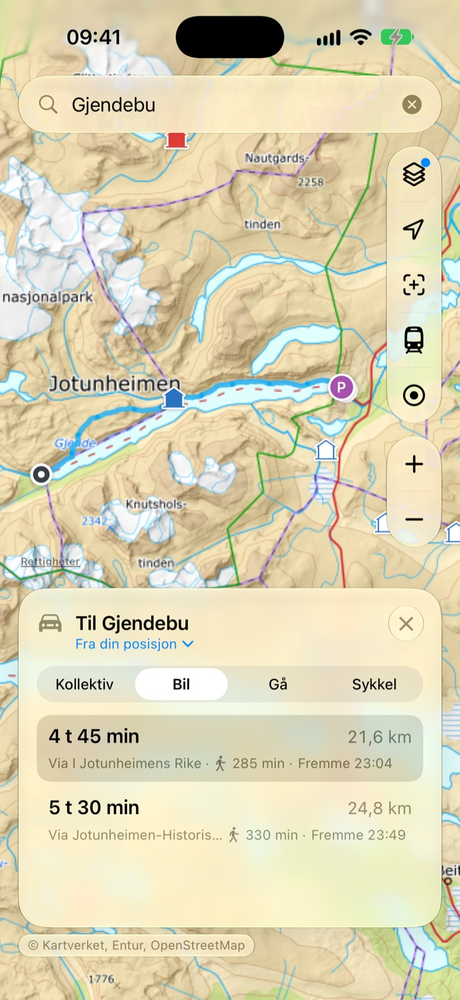

Alt du trenger på tur, i én app
Fra søndagstur i marka til fjelltur i Jotunheimen og reisen hjem med tog. Varde henter data fra Kartverket, Meteorologisk institutt, NVE og Entur.
Kartverkets kart
Topografisk kart, gråtone, toporaster, sjøkart og flyfoto. Utenfor Norge brukes Apples kart og flyfoto.
Turruter og hytter
Merkede fotruter og sykkelruter fra Turrutebasen, og turisthytter med de samme symbolene som på ut.no.
Vær, snø og skred
Hold fingeren på kartet for høyde, været nå, snødybde og skiføre, snøskredvarsel og tidevann for akkurat det punktet.
Siktanalyse
Se hvilke deler av landskapet som er synlige fra et punkt, med terreng, skog, jordkrumning og utkikkstårn.
Reiseplanlegging
Veibeskrivelse kollektivt, med bil, til fots og på sykkel, med høydeprofil og veiledning med opplesning, også i CarPlay.
Kollektivtrafikk
Holdeplasser for buss, tog, trikk og båt med sanntidsavganger fra Entur, og nærmeste holdeplass med ett trykk.
Sporopptak
Ta opp turen, også med låst skjerm, se den i kartet og del sporet som GPX-fil. Åpne GPX-filer fra andre apper, lagre steder med navn, notat og mappe, og vis alle sporene, rutene og stedene dine i kartet.
Kart uten nett
Last ned området du skal til, med turruter, før du drar dit det ikke er dekning.
Koordinater og trådkors
Søk på koordinater, vis dem i fire formater, også UTM, og kopier dem med ett trykk.
Norges beste kart, rett i lomma
Varde viser Kartverkets topografiske kart med høydekurver, stier og terrengskygge, og legger turruter, hytter og holdeplasser oppå.
- Sju grunnkart: Apple Kart, Topografisk, Gråtone, Toporaster, Sjøkart, Flyfoto og Flyfoto med navn
- Demp grunnkartet, så ruter, hytter og sikt kommer tydeligere fram
- DNT-hytter i rødt og andre hytter i blått, med senger og lenke til ut.no
- Følgemodus med nord opp eller kurs opp


Hold fingeren på kartet
Et langt trykk hvor som helst gir deg et kort med alt som er verdt å vite om akkurat det stedet.
- Terrenghøyde fra Kartverkets laserdata
- Været nå og detaljert værmelding fra Meteorologisk institutt
- Snødybde, nysnø og skiføre fra seNorge, og dagens snøskredvarsel fra Varsom
- Neste flo og fjære ved nærmeste målestasjon
- Koordinater du kan kopiere, og veibeskrivelse dit


Hva kan du se fra toppen?
Velg et punkt og trykk «Sikt». Varde beregner hvilke deler av terrenget som er synlige herfra, og farger dem i kartet.
- Terrengmodell fra Kartverket, med jordkrumning og lysbrytning
- Skogen stenger for sikten, og du kan velge hvor høy den er
- Stå i et utkikkstårn på opptil 50 meter og se over tretoppene
- Skogkanten like ved deg regnes med, uansett hvor langt du zoomer ut
- Zoom ut for å se lenger, så regnes sikten ut på nytt

Fra døra til toppen, og hjem igjen
Planlegg reisen kollektivt, med bil, til fots eller på sykkel. Varde viser alternativene, høydeprofilen og veileder deg underveis.
- Kollektivreiser og sanntidsavganger fra Entur
- Veiledning med opplesning, som beregner ny rute om du går feil
- Fungerer i CarPlay
- Nærmeste holdeplass, med gangvei og avganger, med ett trykk


Klar for fjellet, også uten dekning
Last ned kartene før du drar, og ta opp turen mens du går.
- Last ned området som vises, i fem detaljnivåer, med turruter
- Kart du har sett, lagres også, så de vises uten nett senere
- Sporopptak som fortsetter når skjermen er låst
- Del sporet som GPX-fil, og åpne spor, ruter og veipunkter fra andre apper

Se Varde i bruk
Lær å bruke Varde
En komplett veiledning med skjermbilder, fra første oppstart til siktanalyse, veiledning og kart uten nett. Last den ned som PDF og ha den med på tur.
Brukerveiledning
Norsk · PDF
Last nedUser Guide
English · PDF
DownloadDu kan også lese veiledningen i nettleseren.
Bygget på åpne, norske data
Varsler og høyder er veiledende. Bruk alltid eget skjønn i fjellet og på sjøen.
Personvern
Varde har ingen egen server, konto, sporing eller reklame.
Koordinater sendes bare til tjenestene over når det trengs, for eksempel for å hente terrenghøyden der du står eller planlegge en reise. Spor du tar opp, lagres bare på enheten.
Spørsmål eller forslag?
Varde er utviklet av Knut Olav Sunde. Tilbakemeldinger, feil og ønsker tas gjerne imot.